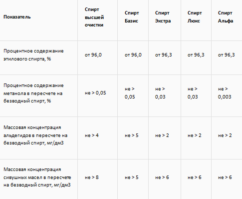

Водка. Секреты изготовления водки
1. Сырье
Исключительной особенностью русского винокурения вплоть до 70-х годов XIX столетия являлось использование в качестве сырья ржаного зерна — именно эта уникальная находка и заложила качественное отличие русских водок от любых других крепких спиртосодержащих напитков. Сорта ржи, с незапамятных времен высеваемые на просторах Среднерусской возвышенности, отнюдь не элитные; никто уже не узнает, откуда они появились и чем обусловлена их необычайная выносливость, но лишь эти невзрачные морозостойкие злаки давали материал для получения старинных водок традиционного вкуса.
На протяжении последнего столетия для изготовления массовых сортов водки широко использовалась пшеница, а позднее и картофельная масса, но высшие сорта обязательно готовились на основе ржаного сырья. Интересно, что наши скандинавские соседи, проживающие в сходных климатических условиях «рискованного земледелия», никогда не выставляли на мировой рынок сортов водки, сопоставимых с русскими, хотя и обладали несомненно более высоким по качеству зерном.
Классическим примером является водка «Финляндия». Для ее производства добросовестные финны используют элитную васаскую рожь, выращенную в экологически безупречном районе, и кристально чистую воду, но даже тщательное соблюдение заимствованной у нас технологии не позволяет им получить безупречную, на наш вкус, водку. Картофельные водки Германии, Польши, Бельгии и Украины отличались более жестким вкусом и тяжелым опьяняющим действием, на что обращал внимание еще господин Энгельс в своей знаменитой работе «Картофельная водка в Германии» по поводу неблагоприятного характера опьянения у немецкого рабочего класса во второй половине XIX столетия.
2. Вода
Для изготовления качественной русской водки пригодна речная или ключевая вода определенной жесткости. Вплоть до 20-х годов XX столетия этим условиям отвечала вода верховьев Москвы-реки, Клязьмы и Невы. Исключительной по вкусу и мягкости до сих пор остается вода некоторых мытищинских подмосковных ключей, откуда еще в XVIII веке в Москву был проведен 20-километровый водопровод.
Известно, что вплоть до 30-х годов в Санкт-Петербурге ежегодно появлялся пароход, набиравший чистую воду в верховьях Невы (разумеется, не бесплатно), т. к. русские эмигрантские фирмы, развернувшие производство «классических» водок в Германии, Швеции и Америке, так и не смогли подобрать воду необходимого по рецептуре состава-в частности, имеется в виду знаменитый «Пьер Смирнофф». Нам неизвестно, чем завершилась эта история, но Советская Россия на протяжении многих лет исправно получала твердую валюту в обмен на обычную пресную воду, столь необходимую для измученных жаждой эмигрантов.
Перед смешиванием с хлебным спиртом вода проходила дополнительную обработку: отстаивание, фильтрацию через кварцевый песок, аэрацию (насыщение кислородом), но никогда не подвергалась кипячению или дистилляции — в этом заключено традиционное преимущество нашей водки перед «мертвыми» по вкусу псевдоводками США, Швеции или Германии. Ключевая или речная вода обладает свежим запахом, питкостью (профессиональный термин дегустаторов) и прозрачностью с «хрустальной» игрой света, которых полностью лишается вода, прошедшая процесс дистилляции.
3. Дрожжи
С XVII века в России существуют культуры дрожжей, предназначенные исключительно для водочного производства. На протяжении нескольких столетий осуществлялся целенаправленный отбор культур, дающих максимальный «наброд» спирта и наилучшие вкусовые данные конечного продукта, поэтому отечественную «винную закваску» можно смело отнести к национальному достоянию: в специальных коллекциях эталонные дрожжевые клетки могут сохраняться бесконечно долго. Во время оккупации немцы весьма активно интересовались подобными коллекциями и вывозили их в Германию наравне с иными культурными ценностями.
4. Способы очистки
С самого начала отечественного винокурения в России уделяли большое внимание проблеме очистки получаемого спирта от нежелательного вкуса и запаха. Имея огромный опыт в изготовлении ароматических медово-ягодных и пиво-медовых напитков, русские были просто вынуждены перенести ряд технологических тонкостей в процесс винокурения, ибо первые результаты дистилляции на несовершенном оборудовании оказались весьма удручающими — спирт выходил мутного цвета, низкого качества с запахом сивушных масел и отвратительного вкуса. Но, тем не менее, это был крепкий алкогольный напиток и производители были заинтересованы в улучшении его внешнего вида и вкусовых качеств.
Совершенствование оборудования для дистилляции продвигалось довольно медленно (в России XV-XVII вв. было весьма проблематично купить или изготовить герметически закрывающиеся котлы со змеевиками и охладителями), и древние винокуры использовали приемы улучшения качества, столетиями отрабабатывавшиеся в медоставлении и медоварении. Некоторые из них напоминают традиционные западно-европейские, но большая часть так и останется оригинальными русскими изобретениями.
Работа над совершенствованием перегонных кубов (так именовались дистилляционные аппараты), как полагают, в течение длительного времени проводилась в крупных монастырях, во множестве стоявших на территории Московского государства в те далекие времена. Являясь средоточием не только духовной, но и технической образованности, монастыри приложили немало усилий в трудах над улучшением качества водки. Сразу оговоримся, что ни в одном монастырском архиве не обнаружено указаний на подобные изыскания — но это имеет свое объяснение. В середине XVII века произошел раскол русской церкви, арест и ссылка патриарха Никона; огромное количество церковных документов было безжалостно уничтожено.
Кроме того, после ознакомления в 1382 году с итальянским aqua vitae (генуэзские купцы с успехом демонстрировали иноземную диковину при великокняжеском дворе) духовенство не могло не понять, что спирт — а это был именно он — имеет хорошее будущее. За монастырскими стенами работало достаточно просвещенных химиков, чтобы немедленно приступить к созданию перегонного оборудования, — естественно, что работы проводились под немалым секретом.
И еще один аргумент. Котлы, медная арматура и охладители стоили больших денег, и только монастырская казна могла позволить себе такую роскошь, как длительные и целенаправленные лабораторные исследования.
Но вернемся к очистке хлебного спирта.
4.1. Фильтрация
Методы очистки водно-спиртовых смесей путем фильтрации разрабатывались в России долго и тщательно, знания в этой области столетиями переходили от одного поколения винокуров к другому. Использовались многие материалы. Спирт фильтровали через мелкий песок, через сукно и фетр, золу от различных деревьев и, наконец, через уголь, оказавшийся идеальным веществом для удаления нежелательных примесей.
К концу XVIII столетия, когда русские нашли способ увеличивать поглотительную способность древесного угля (иначе говоря, активировать), фильтрация достигла своего высочайшего совершенства.
Методом проб и ошибок были найдены породы деревьев, при пережигании которых получается лучший древесный уголь: буковый, липовый, березовый, дубовый и ольховый. Часть из них, по причине дороговизны, применялась исключительно в домашнем дворянском винокурении, а самим рациональным был признан березовый уголь, в огромном количестве изготавливавшийся для внутренних кузнечных, литейных и самоварных нужд. Работа с активированными углями ведется и в наше время, но ключевые принципы фильтрации, как наилучшего способа очистки водно-спиртовых смесей, были заложены именно тогда отечественными винокурами создано основополагающее правило, определившее отменное качество русской водки: нельзя проводить фильтрацию крепкого спирта-сырца, т. к. древесные угли не в состоянии «отнять» у него все нежелательные примеси.
Правило оказалось «золотым». Во второй половине прошлого столетия качеством водки вплотную занялся Д. И. Менделеев с небольшим творческим коллективом, куда входили гг. профессора М. Г. Кучеров, А. Н. Грацианов, А. Н. Шустов и будущий академик Н. Д. Зелинский. В ходе работы было выяснено, что тройная очистка водно-спиртовой смеси (водки) через колонку, заполненную дробленым березовым углем, позволяет добиться практически невозможного: самые тонкие лабораторно-химические методы оказываются не в состоянии выявить наличие примесей, то есть смесь очищается полностью.
Кстати, потрясающая поглотительная способность активированного угля и постоянные испарения спирта в помещении лаборатории натолкнули ученика Д. И. Менделеева Николая Зелинского на одну оригинальную и, как показало время, счастливую мысль — когда во время Первой мировой войны немцы использовали хлор и иприт для боевых действий, будущий академик предложил старую «домашнюю заготовку» для извлечения ядовитых веществ из воздуха. В 1915 году Н. Д. Зелинский запатентовал фильтрующий противогаз собственной конструкции, оказавшийся настолько удачным, что после модернизации 1939 года он используется до настоящего времени не только в России, но и в армиях других стран.
4.2. Биологические способы очистки
При передвоении (повторной возгонке полученного спирта-сырца) русские применяли дорогостоящие, но весьма эффективные способы биологической очистки — коагуляцию.
В полученный сырец, представлявший собой спирт невысокого качества с крепостью не более 70 об. %, обильно лили свежее молоко или добавляли яичный белок. Смесь немедленно сворачивалась и постепенно оседала на дно, захватывая с собой нежелательные сивушные примеси.
Последующая возгонка давала кристальной чистоты продукт, но и это еще не все: передвоенный спирт разводился чистой водой до крепости водки и подвергался окончательной очистке с помощью свежеиспеченного ржаного хлеба.
С белками молока и яиц все понятно, но при чем здесь хлеб?
Оказывается, что свежеиспеченный каравай (в старом хлебе размножаются дрожжи, способные передать водке неприятный привкус) являет собой сложную систему пор в клейком веществе теста, причем суммарная площадь всех пор достигает нескольких квадратных метров. Понятно, что клейковина способна очистить водку «насухо» даже от минимальных остатков сивушных примесей.
В натуральном хозяйстве старинного дворянского поместья остатки зерна, солода, молока, хлеба и яиц шли на корм скоту, что хотя бы частично компенсировало затраты на производство качественной водки. Понятно, что для экономной Европы подобное расточительство было немыслимой роскошью.
4.3. Выморозка и склеивание
Чего в России всегда было с избытком, так это холодов и мороза — рано или поздно винокуры обнаружили уникальную вещь: при замораживании водки ее вкусовые качества улучшаются, т. к. вода, примерзая к стенкам бочонка, забирает с собой и сивушные примеси. Оставалось осторожно перелить незамерзшую водку и немедленно продать ее по более высокой цене.
Так была изобретена русская выморозка (строго говоря, известная ранее из практики медоставления) — процесс медленный, но эффективный и практически бесплатный. Со временем соотечественники научились вымораживать огромные партии водки не только зимой, но и летом в специальных подземных ледниках, где лед сохранялся вплоть до глубокой осени.
Еще одна старинная технология — склеивание — была дорогостоящей, но позволяла добиться еще более тонкого биологического очищения. Оклеивание было явно позаимствовано из виноделия и в модифицированном виде перенесено в винокуренное производство. Использовался рыбий клей карлук (сегодня трудно сказать, что он из себя представлял, т. к. секрет его приготовления утрачен), который в растворенном виде добавлялся в отстоенную водку. Вещество клея переходило в гелеобразное состояние и постепенно оседало на дне бочки, «захватывая» с собой нежелательные продукты брожения.
5. Ароматизация
В заключение мы коснемся традиционного способа улучшения запаха и вкуса алкогольных напитков, известного в России с незапамятных времен из опыта медоварения. Кстати, некоторые историки утверждают, что хмель, как ароматическая добавка, получил распространение в Европе благодаря славянским племенам, научившимся добавлять его в пиво и мед для придания им специфического запаха и вкуса. Немцы, голландцы и англичане редко добавляют хмель в пиво, поэтому «Хайникен», «Хольстейн» и другие знаменитые сорта разительно отличаются по вкусу от привычного нам чешского или отечественного пива.
Славяне считали, что именно хмель придает пиву опьяняющие свойства, что, кстати, не лишено основания: из хмеля выделен ряд алкалоидов (растительных соединений), обладающих слабым наркотическим действием. Но главное достоинство хмеля заключалось в другом — никакое иное растительное вещество не может так хорошо заглушать привкус сивухи. Подобными ценными свойствами обладает мед, способный «облагородить» вкусовые качества самого гадостного спирта.
Классификация водки
На сегодняшний день водка делится на два вида:
- водка обыкновенная, которая представляет собой чистую водно-спиртовую смесь;
- водка особая, допускающая незначительные вкусовые или ароматические добавки, которые смягчают, но не заглушают характерный для водки вкус.
По видам водочного спирта водка делится на:
- спирт первого сорта (не применяется для производства алкоголя);
- спирт высшей очистки (для производства настоек, наливок или дешевой водки);
- базис (зерно или смесь зерна с картофелем; картофельного крахмала в смеси - не > 60%);
- экстра (зерно или смесь зерна с картофелем; картофельного крахмала в смеси - не > 60%);
- люкс (зерно или смесь зерна с картофелем; картофельного крахмала в смеси - не > 35%);
- альфа (изготавливается только из зерен пшеницы, ржи наивысшего качества или их смеси).
Качество представленных видов спирта определяется множеством характеристик. Основными из этих характеристик считаются объемная доля этилового спирта (определяет крепость спирта), массовая концентрация сивушных масел и альдегидов, процентное содержание метанола.
По качеству спирта и цене:
Качество конечного продукта (водки) зависит от используемого вида спирта. Условно выделяют 4 основных ценовых сегмента водки:
- эконом (имеет низкое качество и производится из спирта высшей очистки, который проходит минимальную фильтрацию);
- среднеценовой или стадарт (водка среднего качества за приемлемую цену; как правило, изготавливается из спиртов класса «экстра», проходящих несколько фильтраций);
- премиум (элитный алкоголь, который производится из спирта категории «люкс»; несколько этапов очистки как для спирта, так и для воды);
- супер-премиум (элитный алкогольный напиток, получаемый из спиртов «люкс» или «альфа»; выделяется обычно ценой больше, чем качеством).